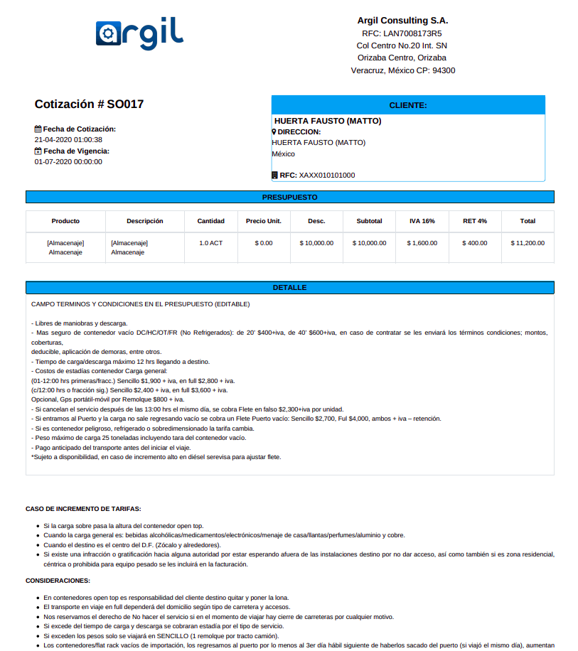

<section class="oe_container oe_dark">
	<div class="oe_row oe_spaced">
        <div class="oe_span12">
            <h2 class="oe_slogan text-center">Reporte para Cotizaciones - Estilo Carta Porte (Belchez) </h2>
        </div>
        <div class="oe_span6">
            <p class='oe_mt32 text-justify'>
           Este modulo crea un nuevo Reporte llamado "Reporte de Cotizaci&oacute;n (Detallado)" el cual podemos generar por medio del boton Imprimir en una Cotizaci&oacute;n.</p>
        </div>
        <div class="oe_span6">
            <div class="oe_span6 text-left">
                
            </div>
        </div>
    </div>
</section>
